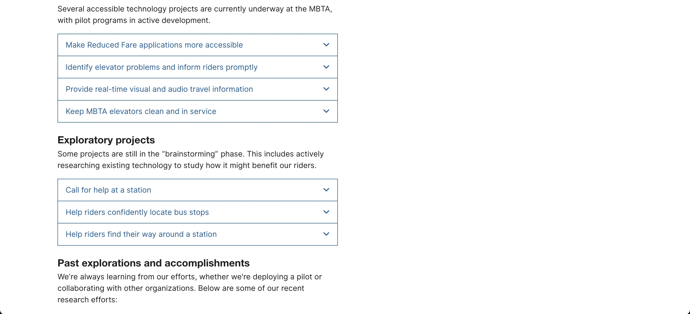
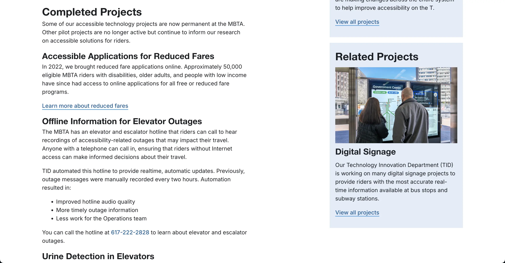
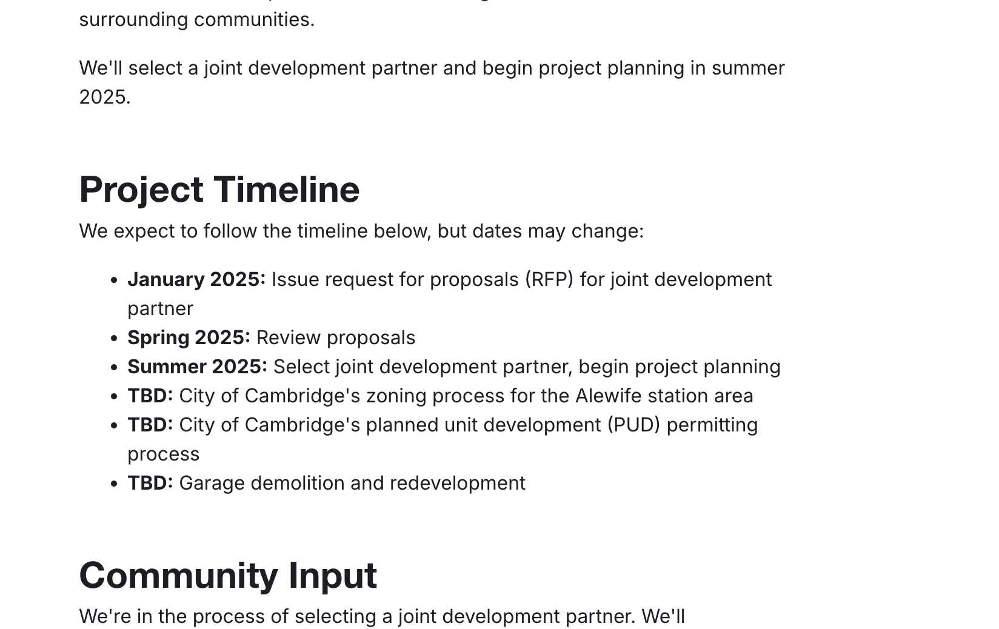

Here's how I help project teams at the MBTA format their content accessibly for the web.
Live webpage: Accessible Technology
This webpage tells riders about tech projects we're doing at the T to help make the system more accessible. My team first published it in 2022.
In November 2024, I updated info on the page to let riders know how the projects have progressed. With help and feedback from other content strategists on my team, I also reformatted the content to make this page more scannable and accessible.
Before, info about each project was behind an accordion. Here's a screenshot from the Wayback Machine:
Now, info about each project is directly on the page, under an H3 header. Here's a screenshot from mbta.com in December 2024:
This reformat works because some projects on the page have now been running long enough that they have dedicated webpages on mbta.com. We can shorten their descriptions here and focus on linking to those dedicated webpages, which:
Having the content out from behind accordions also helps with accessibility. It makes the content:
Live webpage: Transit-Oriented Development at Alewife
The project team I worked it originally considered embedding a graphic of their project's timeline on this webpage.
I worked with them to turn that graphic into a text-based timeline, formatted as a bulleted list, instead.
Here's a screenshot of the project timeline from mbta.com in December 2024:
Graphic images can be accessible to assistive tech like screen readers with alt text. But formatting this timeline so it's written directly in the page's HTML: